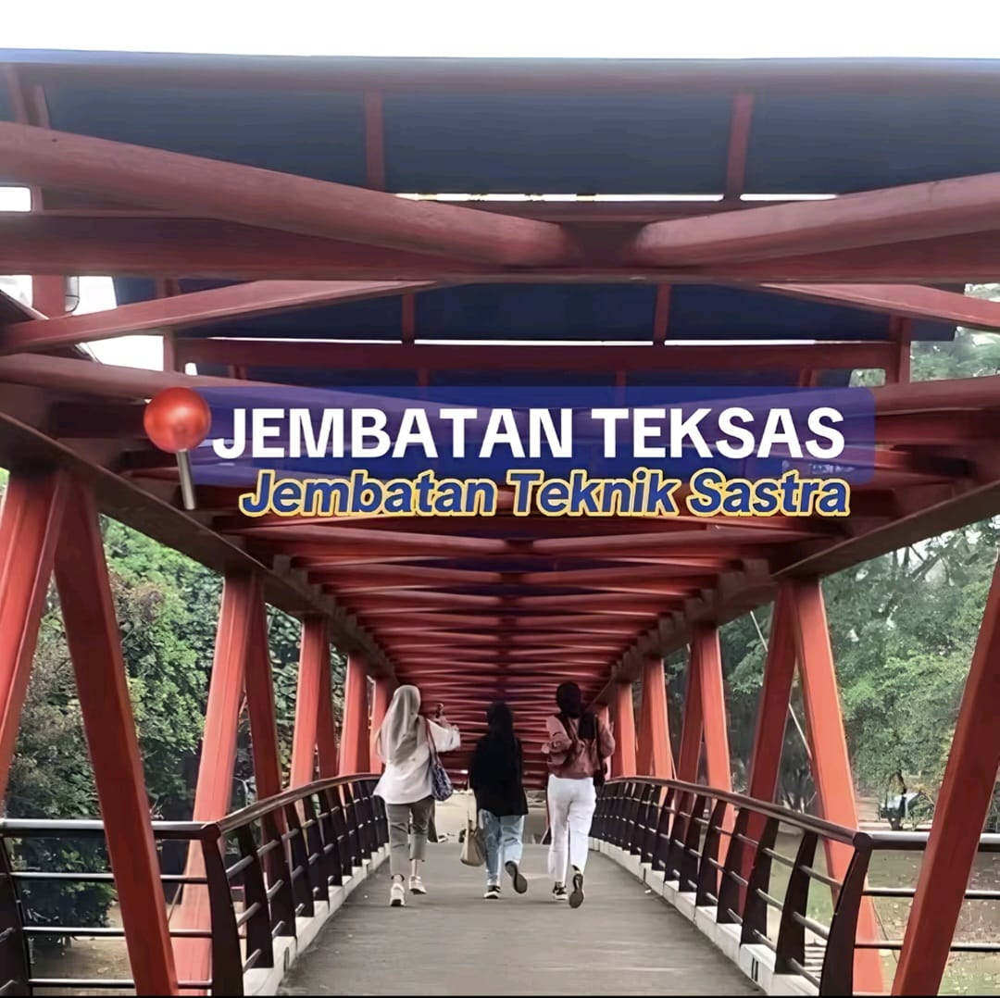
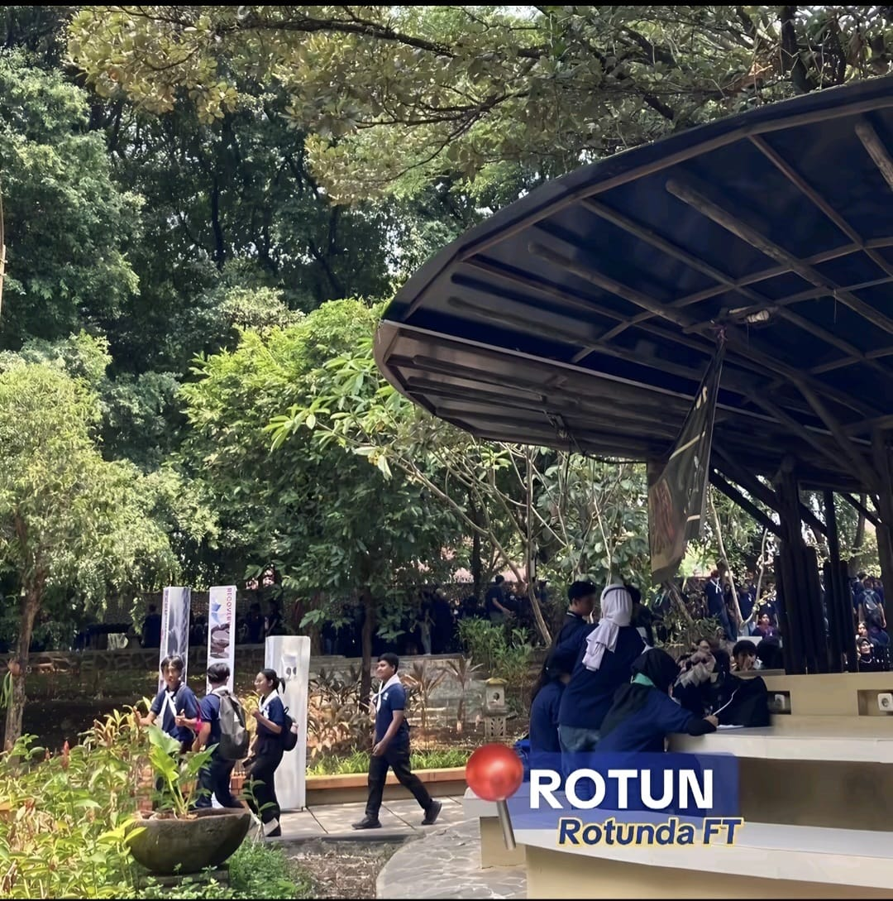
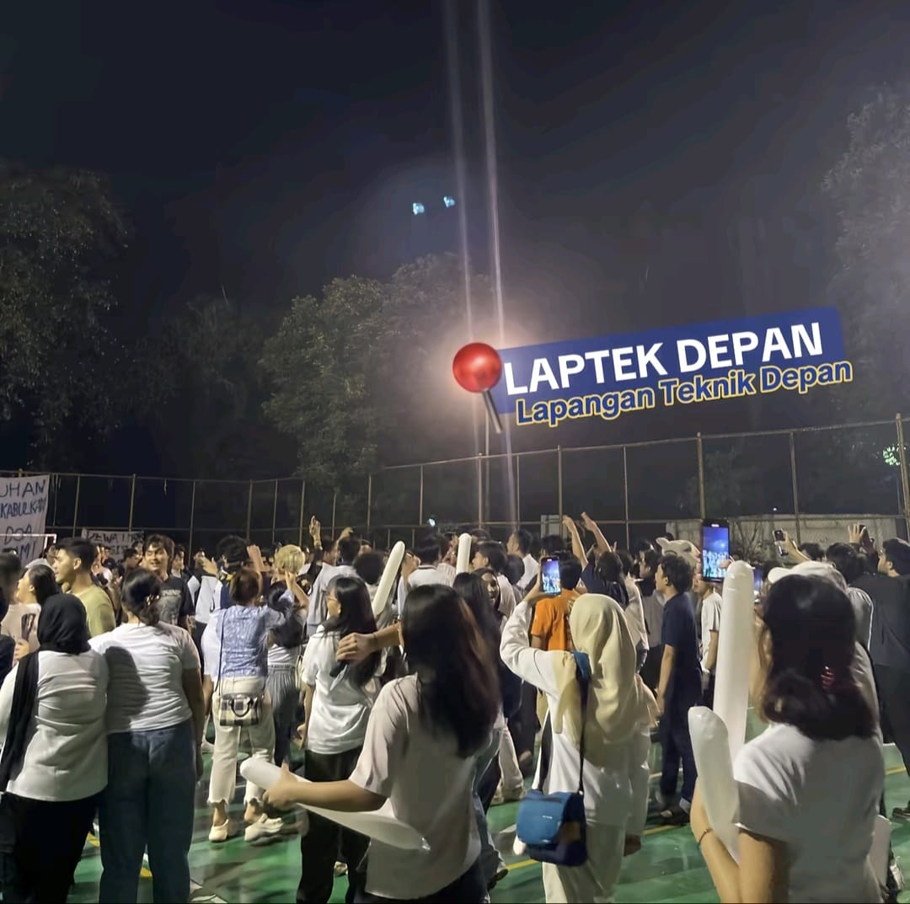
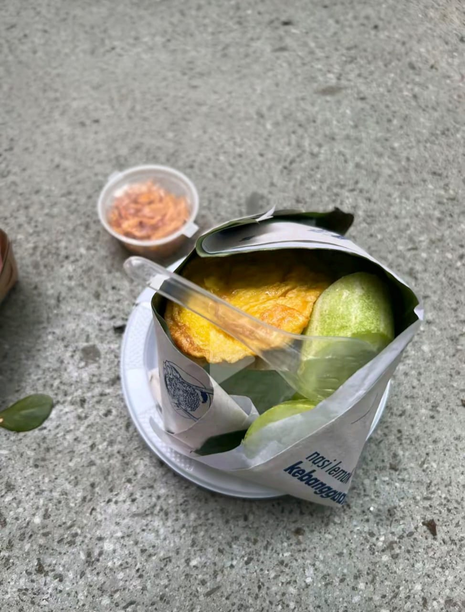
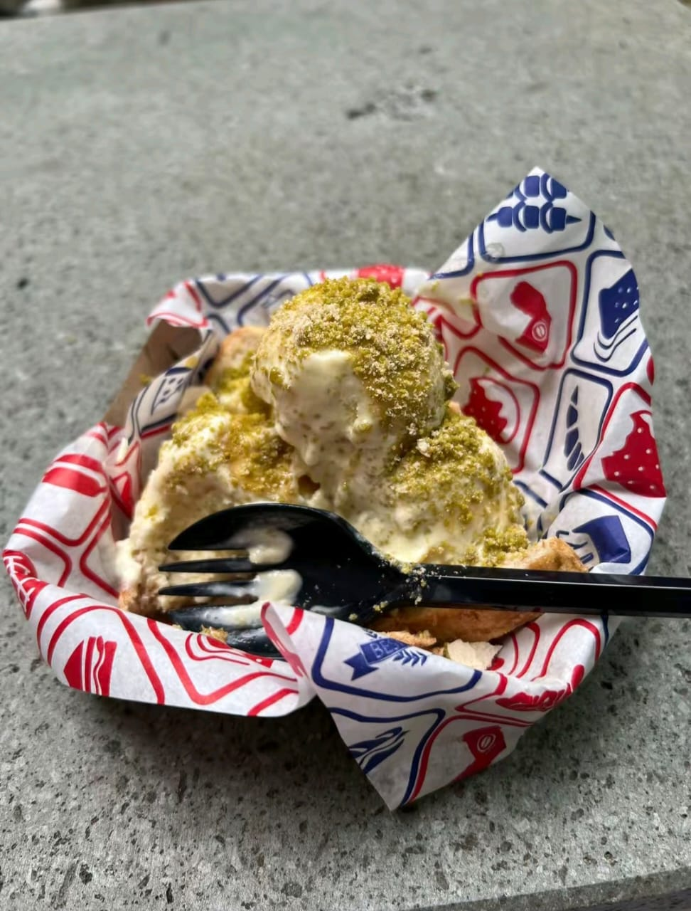
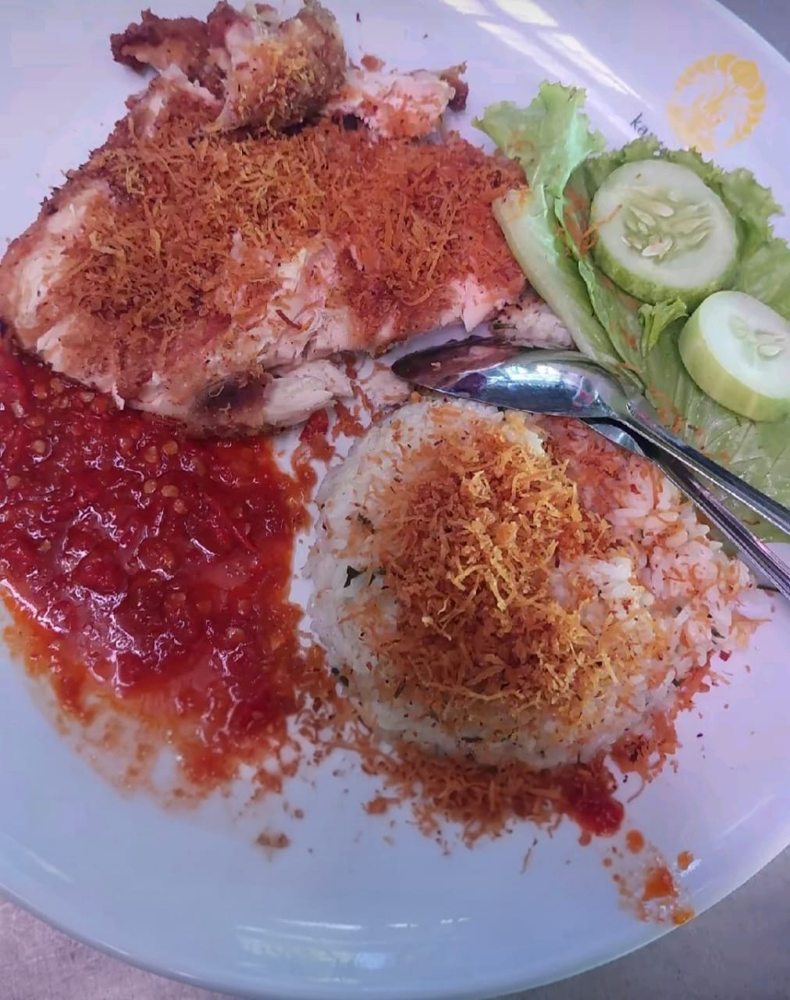
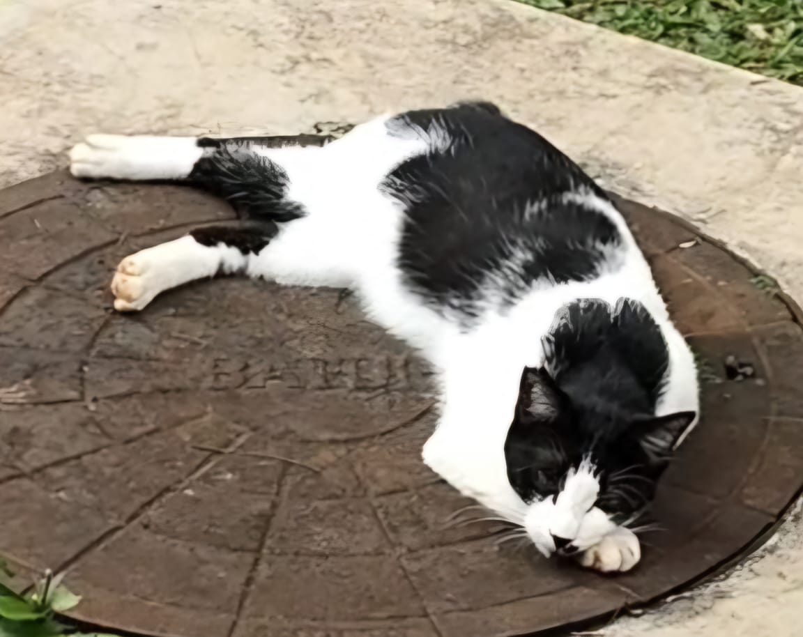
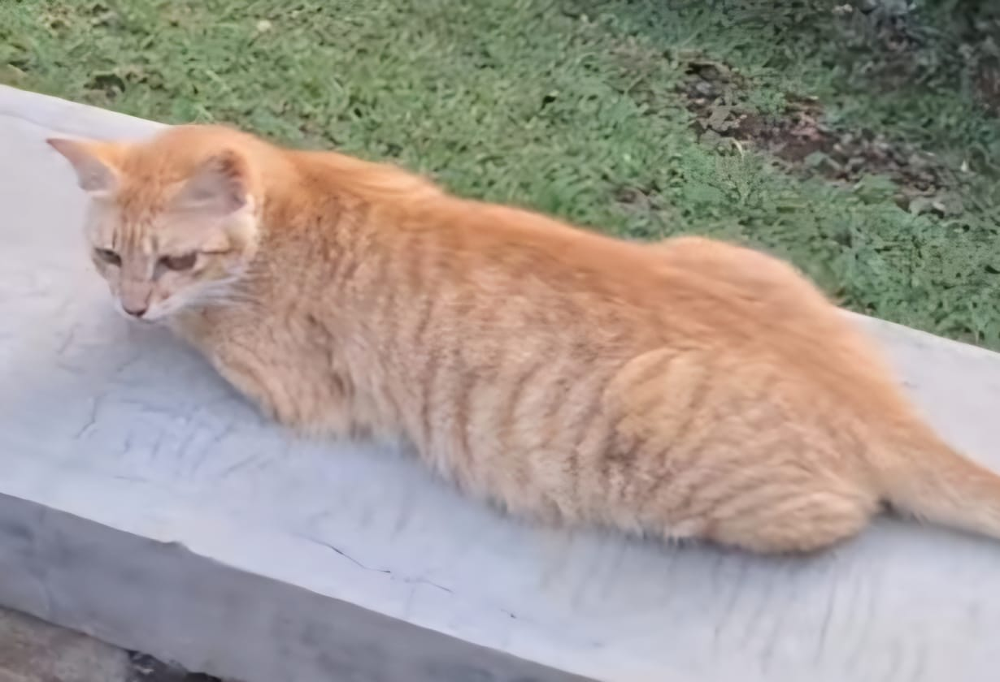
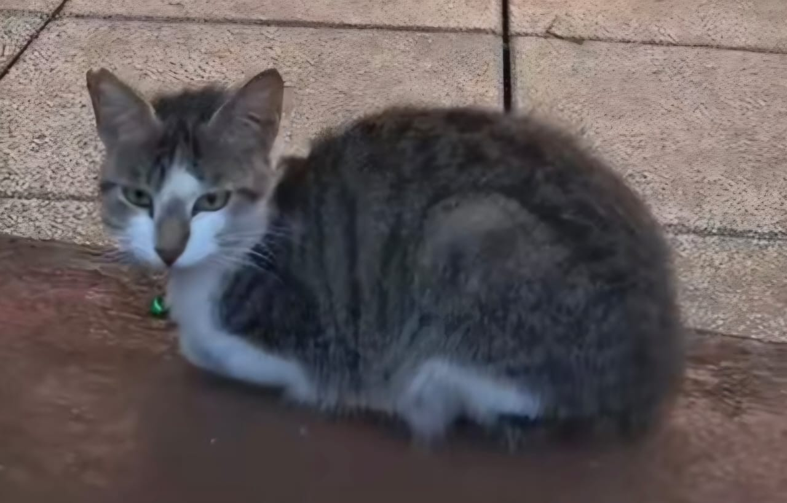

Fakultas Teknik (FT) merupakan salah satu fakultas terbesar di UI dengan 8 Departemen dan 13 program studi tingkat sarjana,
12 program studi tingkat magister, dan 7 program studi tingkat doktor. Berdasarkan data Times Higher Education tahun 2024,
FTUI menempati peringkat 1 di Indonesia untuk kategori Engineering and Technology. FTUI mendidik lebih dari 8000 mahasiswa
setiap tahunnya. Dengan visi “Membangun Enterpreneur FTUI yang Unggul Berdampak Tinggi melalui Kolaborasi Multidisiplin
berbasis Produktivitas untuk Mewujudkan FTUI yang Unggul dan Berdaya Saing Global.”
Spot-spot di FT menjadi tempat favorit mahasiswa untuk berjalan, istirahat, bersosialisasi, dan menikmati suasana kampus
yang rindang. Di sekitar FT terdapat berbagai makanan andalan mahasiswa, mulai dari makanan berat hingga cemilan dingin.
Kucing-kucing di area FT juga sering menemani waktu istirahat mahasiswa, lucu dan friendly.